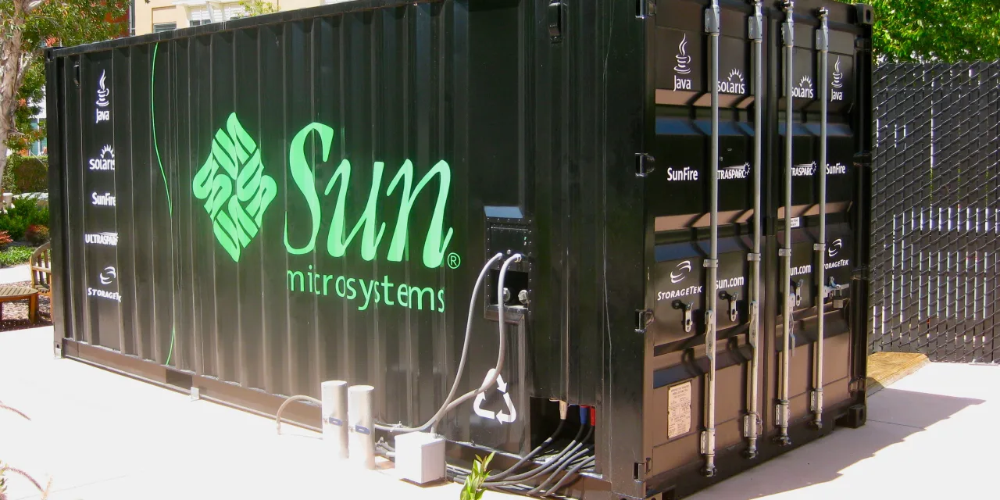

TSSI를 볼 때 주주가 가장 먼저 풀어야 할 오해가 있습니다. 이 회사는 엔비디아처럼 GPU를 만들지 않고, 델처럼 서버 브랜드를 앞세우지도 않으며, 버티브처럼 전력·냉각 장비를 직접 대규모로 파는 회사도 아닙니다. TSS Inc.는 AI와 고성능컴퓨팅 장비가 데이터센터 안에서 실제로 납품되고, 랙 단위로 조립되고, 검수되고, 고객 환경에 맞게 배포되도록 돕는 통합 서비스 회사입니다. 그래서 좋은 질문은 “TSSI가 AI 회사인가”가 아니라 “AI 데이터센터 투자 사이클에서 통합·조달·시설관리 매출이 얼마나 오래 남을 수 있는가”입니다.
숫자는 이미 작지 않습니다. 회사의 2025년 연간 매출은 2억4,571만9,000달러로 2024년 1억4,814만4,000달러보다 66% 증가했습니다. 2026년 1분기 매출은 5,534만6,000달러로 2025년 1분기 9,895만9,000달러보다 줄었지만, 이 감소는 전년 1분기에 조달 매출이 유난히 컸던 영향이 큽니다. 더 중요한 변화는 시스템 통합 매출입니다. 2026년 1분기 시스템 통합 매출은 1,407만6,000달러로 전년 동기 748만4,000달러에서 88% 증가했습니다.
그런데 여기서 바로 낙관하면 안 됩니다. TSSI의 2026년 1분기 매출총이익은 880만6,000달러로 전년 동기 921만 달러보다 낮았고, 순이익도 227만6,000달러로 전년 동기 297만9,000달러보다 줄었습니다. 영업현금흐름은 2025년 1분기 플러스 2,063만7,000달러에서 2026년 1분기 마이너스 1,492만8,000달러로 바뀌었습니다. 주주에게 중요한 지점은 바로 여기에 있습니다. TSSI는 매출이 실제로 나오는 회사지만, 그 매출이 언제나 현금으로 곧장 남는 구조는 아닙니다.
TSSI의 사업은 세 갈래로 나뉩니다

TSS의 사업은 크게 조달, 시스템 통합, 시설관리로 나뉩니다. 조달은 고객을 대신해 하드웨어, 소프트웨어, 전문 서비스를 확보하는 일입니다. 시스템 통합은 데이터센터 안에 들어갈 장비를 고객 요구에 맞춰 랙 단위로 조립하고 설정하고 검수하는 일입니다. 시설관리는 데이터센터와 모듈형 데이터센터의 설계, 프로젝트 관리, 유지보수, 원격 모니터링 같은 운영 지원에 가깝습니다.
2025년 매출 구조를 보면 조달 매출이 1억9,747만6,000달러로 전체의 대부분을 차지했습니다. 시스템 통합 매출은 4,033만7,000달러, 시설관리 매출은 790만6,000달러였습니다. 표면적으로는 조달 회사처럼 보입니다. 하지만 이익 구조를 보면 이야기가 달라집니다. 2025년 세그먼트 매출총이익은 조달 1,517만4,000달러, 시스템 통합 1,245만6,000달러, 시설관리 475만2,000달러였습니다. 매출 비중이 작은 시스템 통합과 시설관리가 이익에서 차지하는 의미는 훨씬 큽니다.
따라서 TSSI를 평가할 때는 매출 총액만 보면 안 됩니다. 조달 매출은 금액이 크지만 원가도 함께 붙을 수 있습니다. 반면 시스템 통합과 시설관리 매출은 회사가 실제로 기술 인력, 공정, 시설, 고객 관계를 통해 부가가치를 남기는 부분입니다. 주주가 확인해야 할 첫 번째 숫자는 전체 매출 성장률이 아니라 시스템 통합 매출과 시설관리 매출의 비중입니다.
AI 랙 통합은 TSSI의 핵심 성장축입니다
관련 영상
TSS Inc. TSSI가 AI 데이터센터 인프라 뒤에서 성장한 이유를 설명하는 영어 롱폼 영상
TSSI의 핵심 변화는 AI 랙 통합입니다. 회사는 2024년 10월 최대 고객과 AI 지원 컴퓨터 랙에 대한 장기 시스템 통합 계약을 체결했고, 2025년에는 조지타운의 새 통합 시설로 이전했습니다. 10-K에 따르면 회사는 이 시설 개선에 약 4,000만 달러를 투자했으며, 주된 목적은 공랭식과 직접 액체 냉각 랙을 모두 지원할 수 있는 전력과 냉각 능력을 늘리는 것이었습니다.
이 부분은 단순한 창고 확장이 아닙니다. AI 랙은 일반 서버랙보다 전력 밀도가 높고, 열 관리가 까다롭고, 고객별 구성도 복잡합니다. GPU, 스위치, 스토리지, 케이블, 전력분배, 냉각 테스트가 한 묶음으로 움직입니다. 대형 고객은 이 과정을 빠르게 처리해야 하지만, 모든 작업을 자사 데이터센터 안에서 직접 처리하면 속도와 품질 관리에 부담이 생깁니다. TSS가 중앙 통합 시설에서 랙을 조립하고 검증하는 모델은 이 병목을 줄이는 역할을 합니다.
회사는 2025년 12월 이 장기 계약을 수정해 가격을 업데이트하고 계약 기간을 2년 추가 연장했다고 밝혔습니다. 이 대목은 긍정적입니다. 단기 주문이 아니라 최소 물량과 시설 비용 회수 논리가 들어간 관계라는 뜻이기 때문입니다. 다만 계약은 편의 종료 조항과 고객 의존 리스크도 함께 갖습니다. 그래서 이 글의 핵심은 “AI 랙 통합이 성장한다”가 아니라 “그 성장이 특정 고객 하나에 얼마나 묶여 있는가”입니다.
가장 큰 장점은 실제 매출이고, 가장 큰 약점은 고객 집중입니다
TSSI의 가장 매력적인 부분은 이미 매출과 이익이 있다는 점입니다. 많은 AI 데이터센터 초소형주는 아직 기술 설명과 파일럿 단계에 머무르지만, TSS는 2025년 매출 2억 달러를 넘겼고 순이익도 냈습니다. 조달, 통합, 시설관리라는 현실적인 서비스가 있고, 고객이 실제 장비를 배포해야 하기 때문에 수요도 손에 잡힙니다. 이 점에서 TSSI는 “언젠가 될지도 모르는 기술주”와는 결이 다릅니다.
하지만 가장 큰 약점도 분명합니다. 2025년 10-K는 단일 OEM 고객이 2025년, 2024년, 2023년 매출의 각각 약 99%, 99%, 96%를 차지했다고 설명합니다. 2026년 1분기 10-Q에서도 한 고객이 매출의 99%를 차지했고, 2026년 3월 말 매출채권의 88%가 그 미국 기반 IT OEM 고객에 묶여 있었습니다. 이름을 공식적으로 밝히지 않은 대형 고객 하나가 사실상 회사의 매출과 현금흐름을 좌우하는 구조입니다.
이런 고객 집중은 양면적입니다. 장점은 대형 고객과의 깊은 관계가 회사의 신뢰도를 높이고, 장기 AI 랙 통합 계약이 시설 투자 회수의 근거가 된다는 점입니다. 약점은 고객이 물량을 늦추거나, 내부 전략을 바꾸거나, 가격 조건을 다시 압박하면 TSS의 손익이 크게 흔들릴 수 있다는 점입니다. 고정 시설비, 인력, 부채 상환, 냉각·전력 투자까지 늘어난 상황에서는 물량 변동이 이익에 크게 반영될 수 있습니다.
현금흐름은 성장주가 놓치기 쉬운 경고등입니다
2026년 1분기 TSSI의 영업현금흐름이 마이너스 1,492만8,000달러였다는 점은 반드시 봐야 합니다. 회사가 적자를 낸 것은 아닙니다. 순이익은 227만6,000달러였습니다. 문제는 운전자본입니다. 재고, 미수금, 매입채무, 이연수익이 움직이면서 현금흐름이 실적보다 크게 흔들렸습니다. 데이터센터 통합 사업에서는 장비와 부품의 조달, 고객 청구, 대금 회수 시점이 맞지 않으면 현금이 묶일 수 있습니다.
이 회사는 조달 매출 비중이 크기 때문에 운전자본 관리가 특히 중요합니다. 고객을 대신해 하드웨어와 소프트웨어를 확보하고, 일부 거래를 총액으로 인식하며, 대금 회수를 앞당기기 위해 매출채권 팩토링을 활용합니다. 이 방식은 성장기에는 매출을 크게 키울 수 있지만, 거래 규모가 커질수록 팩토링 비용, 재고 보유, 고객 결제 조건이 이익과 현금을 흔들 수 있습니다.
반대로 현금 포지션은 단기적으로 나쁘지 않습니다. 2026년 3월 말 현금과 제한 현금은 6,778만4,000달러였습니다. 2025년 8월 공모와 매출 성장 덕분에 현금 여력이 커졌고, 새 시설 투자도 이미 상당 부분 진행됐습니다. 그래서 현재 핵심은 생존 위기보다 현금 전환 품질입니다. AI 랙 통합 매출이 늘어날수록 영업현금흐름이 다시 플러스로 돌아오는지, 아니면 운전자본 부담이 계속 커지는지를 봐야 합니다.
주가가 더 인정받으려면 고객 분산과 마진 믹스가 필요합니다
TSSI가 단순 테마주를 넘어 더 높은 평가를 받으려면 두 가지가 필요합니다. 첫째는 고객 분산입니다. 최대 고객과의 관계는 지금의 성장 기반이지만, 동시에 가장 큰 할인 요인입니다. 신규 OEM, 리셀러, 시스템 통합사, 모듈형 데이터센터 공급자, 직접 기업 고객으로 매출이 확장되어야 합니다. 고객이 한 곳에서 여러 곳으로 늘어나면 같은 매출이라도 시장이 보는 안정성은 달라집니다.
둘째는 마진 믹스입니다. 조달 매출이 큰 폭으로 늘어나는 것보다 시스템 통합과 시설관리 매출이 얼마나 꾸준히 커지는지가 중요합니다. 시스템 통합은 AI 랙 수요와 직접 연결되고, 시설관리는 유지보수와 운영지원 성격이 있어 반복성이 더 강합니다. 2025년 기준 시설관리 매출은 작지만 매출총이익률은 높습니다. TSSI가 장기적으로 더 좋은 회사가 되려면 조달 규모가 아니라 통합·시설관리 이익 기여도가 커져야 합니다.
셋째는 전력과 냉각입니다. 회사는 새 시설에서 15MW의 전력 공급 약정이 있다고 설명하지만, AI 랙 세대가 바뀔수록 전력과 냉각 요구량은 더 커질 수 있습니다. 추가 전력을 제때 확보하지 못하거나 냉각 설비 투자가 늦어지면 고객 물량을 받기 어렵습니다. 이 리스크는 일반 소프트웨어 회사에는 없지만, AI 데이터센터 인프라 서비스 회사에는 매우 현실적입니다.
결론은 TSSI를 데이터센터 현장 레버리지로 보는 것입니다
TSSI는 “AI를 개발하는 회사”가 아닙니다. 그러나 AI 데이터센터가 실제로 늘어나려면 누군가가 랙을 조립하고, 고전력 장비를 검증하고, 고객 요구에 맞춰 납품하고, 모듈형 데이터센터와 시설관리까지 이어줘야 합니다. TSS는 이 지점에 서 있습니다. 그래서 TSSI는 GPU나 클라우드 기업의 대체재가 아니라, AI 인프라가 현장으로 내려올 때 생기는 작업 병목에 투자하는 종목으로 봐야 합니다.
좋은 시나리오는 분명합니다. 시스템 통합 매출이 계속 늘고, 최대 고객과의 계약이 안정적으로 유지되며, 새 시설의 전력·냉각 투자가 충분히 활용되고, 시설관리 같은 고마진 반복 매출이 붙는 경우입니다. 이 경우 TSSI는 초소형 데이터센터 인프라주 중에서 실제 매출을 가진 보기 드문 후보로 남을 수 있습니다.
나쁜 시나리오도 명확합니다. 최대 고객 물량이 줄거나, 조달 매출이 커져도 이익률이 낮아지고, 운전자본이 계속 묶이며, 전력·냉각 추가 투자가 예상보다 커지는 경우입니다. 이때 TSSI는 AI 데이터센터 수혜주가 아니라 고객 집중과 설비 부담을 가진 하청형 통합 서비스 회사로 평가받을 수 있습니다. 따라서 주주는 다음 실적에서 전체 매출보다 시스템 통합 매출, 세그먼트 매출총이익, 영업현금흐름, 고객 집중도, 전력·냉각 투자 계획을 먼저 확인해야 합니다.